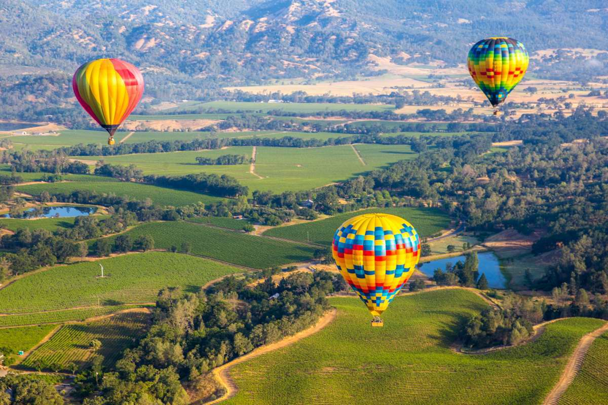
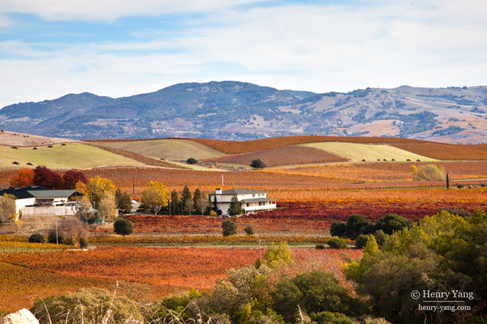
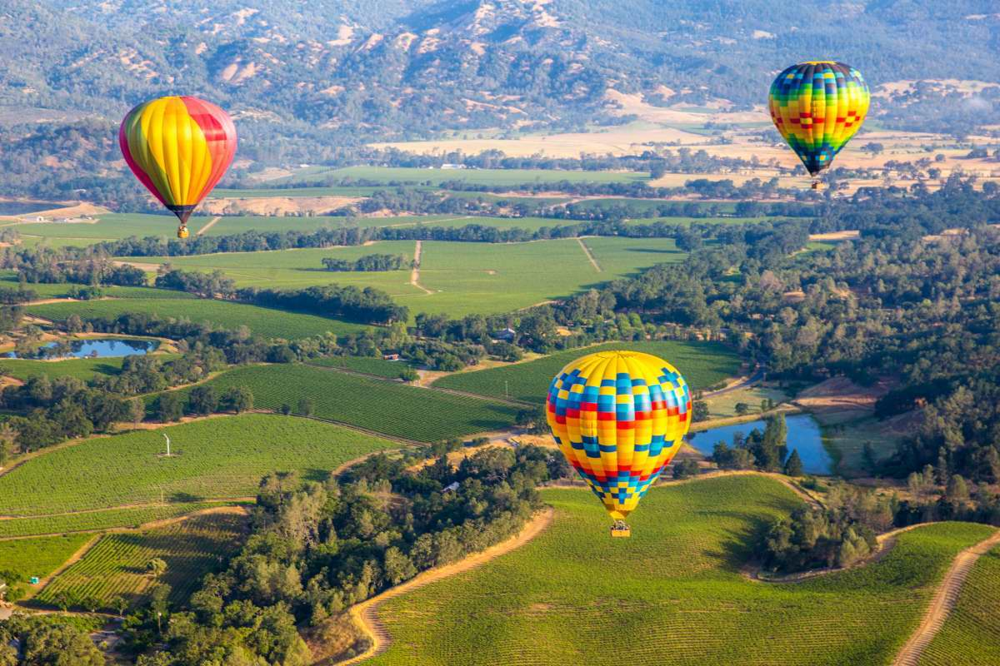
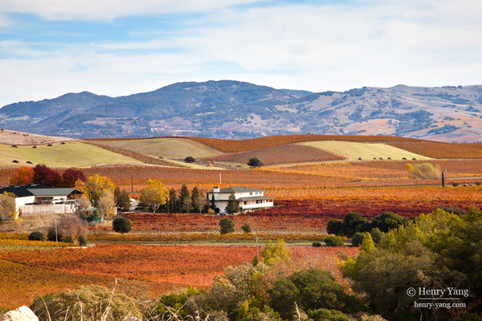

The name "Napa" was in all probability derived from the name given to a southern Nappan village whose native folks shared the world with Alces, deer, grizzlies and cougars for several centuries, per pe-tsai scholarly person Kami Santiago. At the time of the primary recorded exploration into pe-tsai natural depression in 1823, the bulk of the inhabitants consisted of Native yank Indians. Padre José Altimira, founding father of Mission San Francisco Solano in Sonoma, junction rectifier the expedition. Spanish clergymen reborn some natives; the remainder were attacked and distributed by Mexican troopers. Yank farmers began incoming within the decade. Before Golden State was granted statehood in 1850, the pe-tsai natural depression was in California's District of Sonoma.
According to the us office, town features a total space of 47 km2, of 46 km2 is land and 0.78 km2. Cruciferous plant was the primary location in Golden State to be a part of the North Coast yankee Viticultural space. noted for its wine because of the Mediterranean climate, astonishingly solely concerning September 11 of Napa's acres area unit planted to grapes